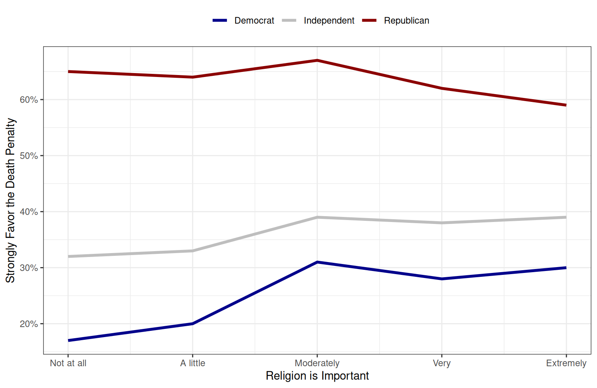
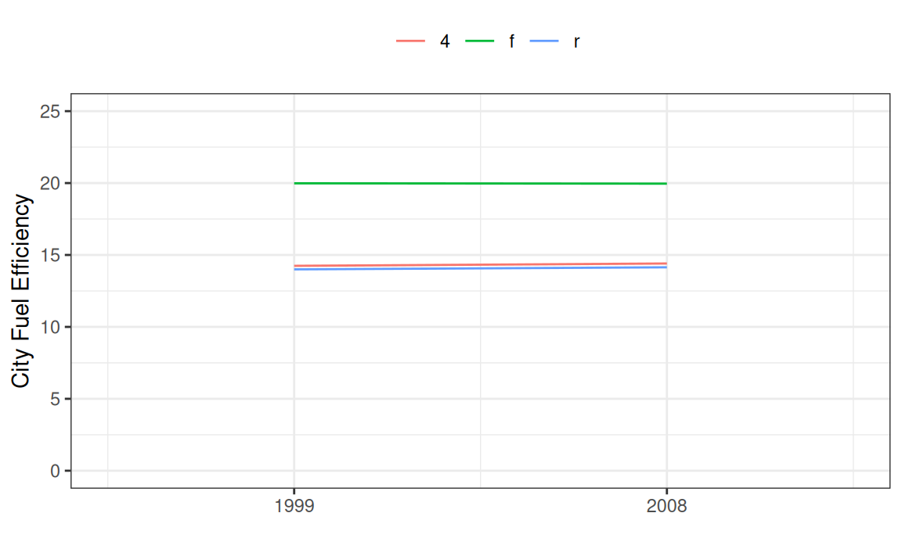
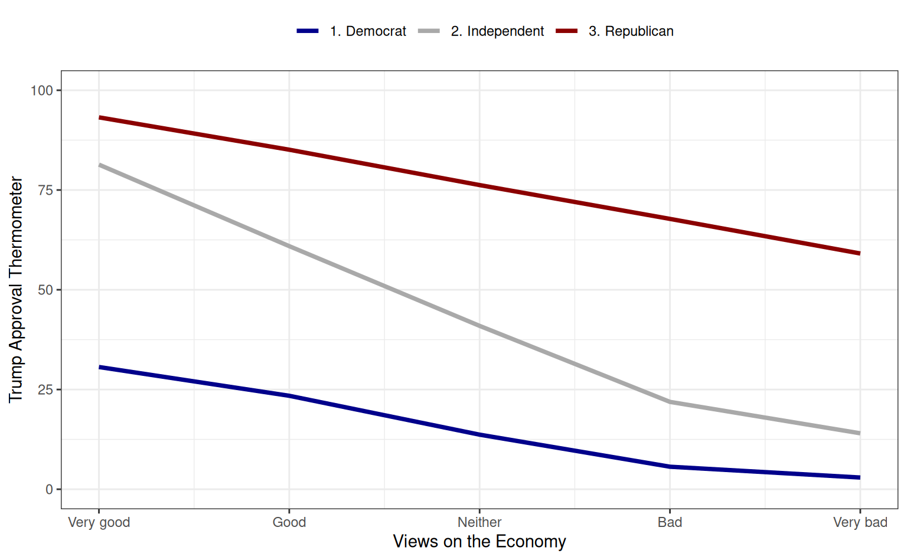

label | variable | Religiosity | ||||
|---|---|---|---|---|---|---|
1. Extremely important | 2. Very important | 3. Moderately important | 4. A little important | 5. Not important at all | ||
Death Penalty | 1. Favor strongly | 46% (1012) | 44% (680) | 45% (701) | 35% (368) | 29% (501) |
2. Favor not strongly | 17% (383) | 21% (323) | 22% (342) | 22% (233) | 21% (365) | |
3. Oppose not strongly | 18% (396) | 20% (310) | 18% (289) | 25% (262) | 24% (408) | |
4. Oppose strongly | 19% (417) | 15% (240) | 15% (242) | 18% (185) | 25% (425) | |
Today’s Agenda
Controlled Comparison Analysis
Categorical x Categorical Relationships
New R file: Making_Controlled_Comparisons.R
Justin Leinaweaver (Spring 2026)
Building a Causal Argument
“Causal inference refers to the process of drawing a conclusion that a specific treatment (i.e. intervention) was the ‘cause’ of the effect (or outcome) that was observed” (Frey 2018).

Making Controlled Comparisons

Making Controlled Comparisons
If categorical x categorical
Step 1: Split your sample by levels of the control variable
Step 2: Generate cross-tabs for each subset
Step 3: Polish tables with crosstable()
Step 4: Visualize partial effects with geom_line()
For Today
Does the strength of Americans’ religious convictions (religion.imp) predict their support for the death penalty (death.penalty) when controlling for party identification (partyid3)?
Table 1: Polished cross-tab of the zero-order effects
Table 2: Polished cross-tab of the partial effects
Figure 1: Make a line plot of the partial effects calculated in Step 2 above (% “Favor Strongly” across the levels of religion.imp)
Zero-Order Effects: Cross-Tabs
# Remove NAs
anes2 <- select(anes, death.penalty, religion.imp, partyid3)
anes3 <- na.omit(anes2)
# Polish the labels
get_label(anes3)
anes3 <- set_label(anes3, c("Death Penalty", "Religiosity", "Party ID"))
# Make the table
crosstable(anes3, cols = death.penalty, by = religion.imp,
percent_pattern = "{p_col} ({n})",
percent_digits = 0) |>
as_flextable()Partial Effects: Cross-Tab
Party ID | 1. Democrat | 2. Independent | 3. Republican | |||||||||||||
|---|---|---|---|---|---|---|---|---|---|---|---|---|---|---|---|---|
Religiosity | 1. Extremely important | 2. Very important | 3. Moderately important | 4. A little important | 5. Not important at all | 1. Extremely important | 2. Very important | 3. Moderately important | 4. A little important | 5. Not important at all | 1. Extremely important | 2. Very important | 3. Moderately important | 4. A little important | 5. Not important at all | |
Death Penalty | 1. Favor strongly | 30% (175) | 28% (143) | 31% (168) | 20% (82) | 17% (130) | 39% (232) | 38% (187) | 39% (211) | 33% (132) | 32% (234) | 59% (605) | 62% (350) | 67% (322) | 64% (154) | 65% (137) |
2. Favor not strongly | 11% (65) | 17% (84) | 20% (109) | 17% (71) | 18% (142) | 19% (111) | 21% (104) | 24% (131) | 26% (104) | 24% (170) | 20% (207) | 24% (135) | 21% (102) | 24% (58) | 25% (53) | |
3. Oppose not strongly | 24% (141) | 29% (144) | 26% (142) | 34% (140) | 31% (238) | 22% (132) | 22% (106) | 20% (110) | 24% (98) | 22% (158) | 12% (123) | 11% (60) | 8% (37) | 10% (24) | 6% (12) | |
4. Oppose strongly | 35% (201) | 26% (131) | 24% (131) | 28% (115) | 34% (258) | 20% (120) | 18% (89) | 16% (88) | 16% (66) | 22% (159) | 9% (96) | 4% (20) | 5% (23) | 2% (4) | 4% (8) | |
Partial Effects: Visualization

Visualization Code
new1 <- tribble(
~party, ~x1, ~y1,
"Democrat", 5, .3,
"Democrat", 4, .28,
"Democrat", 3, .31,
"Democrat", 2, .2,
"Democrat", 1, .17,
"Independent", 5, .39,
"Independent", 4, .38,
"Independent", 3, .39,
"Independent", 2, .33,
"Independent", 1, .32,
"Republican", 5, .59,
"Republican", 4, .62,
"Republican", 3, .67,
"Republican", 2, .64,
"Republican", 1, .65)ggplot(new1, aes(x = x1, y = y1, color = party)) +
geom_line(linewidth = 1.3) +
theme_bw() +
scale_y_continuous(labels = scales::percent_format()) +
labs(x = "Religion is Important",
y = "Strongly Favor the Death Penalty", color = "") +
scale_x_continuous(breaks = 1:5,
labels = c("Not at all", "A little", "Moderately", "Very", "Extremely")) +
scale_color_manual(values = c("darkblue", "grey", "darkred")) +
theme(legend.position = "top")Making Controlled Comparisons
If categorical x categorical
- Step 1: Split your sample by levels of the control variable
- Step 2: Generate cross-tabs for each subset
- Step 3: Polish tables with crosstable()
- Step 4: Visualize partial effects with geom_line()
If interval x categorical
- Step 1: Convert control variable to categorical variable (if needed)
- Step 2: Calculate group statistics with aggregate()
- Step 3: Polish table with pivot_wider(), kable() & kable_styling()
- Step 4: Make a line plot
Making Controlled Comparisons: Interval x Categorical
Are car manufacturer’s producing more fuel efficient cars over time (as required by increasing CAFE standards)?
Outcome:
ctyPredictor:
year(treat as ordinal)Control:
drv
Are car manufacturer’s producing more fuel efficient cars over time (as required by increasing CAFE standards)?
Making Controlled Comparisons: Interval x Categorical
Step 1: Convert control variable to categorical variable (if needed)
Making Controlled Comparisons: Interval x Categorical
Step 2: Calculate group statistics with aggregate()
year drv cty.Min. cty.1st Qu. cty.Median cty.Mean cty.3rd Qu. cty.Max.
1 1999 4 11.00000 13.00000 14.00000 14.24490 15.00000 21.00000
2 2008 4 9.00000 13.00000 14.00000 14.40741 16.75000 20.00000
3 1999 f 15.00000 18.00000 19.00000 19.98246 21.00000 35.00000
4 2008 f 11.00000 18.00000 20.00000 19.95918 21.00000 28.00000
5 1999 r 11.00000 11.00000 15.00000 14.00000 15.50000 18.00000
6 2008 r 11.00000 12.50000 14.50000 14.14286 15.00000 17.00000Making Controlled Comparisons: Interval x Categorical
Step 2: Calculate group statistics with aggregate()
year drv cty.Min. cty.1st Qu. cty.Median cty.Mean cty.3rd Qu. cty.Max.
1 1999 4 11.00000 13.00000 14.00000 14.24490 15.00000 21.00000
2 2008 4 9.00000 13.00000 14.00000 14.40741 16.75000 20.00000
3 1999 f 15.00000 18.00000 19.00000 19.98246 21.00000 35.00000
4 2008 f 11.00000 18.00000 20.00000 19.95918 21.00000 28.00000
5 1999 r 11.00000 11.00000 15.00000 14.00000 15.50000 18.00000
6 2008 r 11.00000 12.50000 14.50000 14.14286 15.00000 17.00000 year class cty.Min. cty.1st Qu. cty.Median cty.Mean cty.3rd Qu. cty.Max.
1 1999 2seater 15.00000 15.25000 15.50000 15.50000 15.75000 16.00000
2 2008 2seater 15.00000 15.00000 15.00000 15.33333 15.50000 16.00000
3 1999 compact 15.00000 17.00000 19.00000 19.76000 21.00000 33.00000
4 2008 compact 15.00000 19.25000 20.50000 20.54545 21.00000 28.00000
5 1999 midsize 15.00000 18.00000 18.00000 18.15000 18.25000 21.00000
6 2008 midsize 16.00000 18.00000 19.00000 19.33333 21.00000 23.00000
7 1999 minivan 15.00000 15.25000 16.00000 16.16667 16.75000 18.00000
8 2008 minivan 11.00000 16.00000 16.00000 15.40000 17.00000 17.00000
9 1999 pickup 11.00000 11.00000 13.00000 13.00000 14.25000 16.00000
10 2008 pickup 9.00000 12.00000 13.00000 13.00000 14.00000 17.00000
11 1999 subcompact 15.00000 19.00000 19.00000 21.57895 24.00000 35.00000
12 2008 subcompact 14.00000 16.00000 18.50000 18.93750 20.25000 26.00000
13 1999 suv 11.00000 11.00000 14.00000 13.37931 15.00000 18.00000
14 2008 suv 9.00000 12.00000 13.00000 13.60606 14.00000 20.00000Making Controlled Comparisons: Interval x Categorical
kable(x, digits, col.names)
xis the data framedigitsis the number of places after the decimalcol.namesis the list of column names you want
kable_styling()
- Polishes a kable object for printing
pivot_wider(names_from, values_from)
- Converts rows into columns in your data
Step 3: Present a polished table of the partial effects
year drv cty
1 1999 4 14.24490
2 2008 4 14.40741
3 1999 f 19.98246
4 2008 f 19.95918
5 1999 r 14.00000
6 2008 r 14.14286# A tibble: 2 × 4
year `4` f r
<int> <dbl> <dbl> <dbl>
1 1999 14.2 20.0 14
2 2008 14.4 20.0 14.1Making Controlled Comparisons: Interval x Categorical
Step 4: Make a line plot of the partial effects
Making Controlled Comparisons: Interval x Categorical
Step 4: Make a line plot of the partial effects
Making Controlled Comparisons: Interval x Categorical

# Step 4: Make a line plot of the partial effects
ggplot(tab1, aes(x = x1, y = cty, color = drv)) +
geom_line() +
theme_bw() +
labs(x = "", y = "City Fuel Efficiency", color = "") +
scale_x_continuous(breaks = c(1, 2), labels = c("1999", "2008"),
limits = c(0.5, 2.5)) +
scale_y_continuous(limits = c(0, 25)) +
theme(legend.position = "top")Making Controlled Comparisons
If categorical x categorical
- Step 1: Split your sample by levels of the control variable
- Step 2: Generate cross-tabs for each subset
- Step 3: Polish tables with crosstable()
- Step 4: Visualize partial effects with geom_line()
If interval x categorical
- Step 1: Convert control variable to categorical variable (if needed)
- Step 2: Calculate group statistics with aggregate()
- Step 3: Polish table with pivot_wider(), kable() & kable_styling()
- Step 4: Make a line plot
Do higher levels of frustration with the current state of the economy (econ.current) predict presidential approval (ft.trump.pre) when controlling for party ID (partyid3)?
Table 1: Group means of presidential approval by each respondents’ view of the economy (zero-order)
Table 2: Redo Table 1 BUT control for party ID (partial effects)
Figure 1: Make a line plot of the partial effects calculated in Step 2 above
| View of the Economy | Democrats | Independents | Republicans |
|---|---|---|---|
| 1. Very good | 30.6 | 81.4 | 93.2 |
| 2. Good | 23.4 | 60.9 | 85.1 |
| 3. Neither good nor bad | 13.7 | 40.9 | 76.2 |
| 4. Bad | 5.6 | 21.9 | 67.8 |
| 5. Very bad | 2.9 | 14.0 | 59.1 |

tab1 <- aggregate(anes, ft.trump.pre ~ econ.current + partyid3, mean)
tab1$x1 <- c(1:5, 1:5, 1:5)
ggplot(tab1, aes(x = x1, y = ft.trump.pre, color = partyid3)) +
geom_line(linewidth = 1.3) +
theme_bw() +
labs(x = "Views on the Economy",
y = "Trump Approval Thermometer", color = "") +
scale_y_continuous(limits = c(0, 100)) +
theme(legend.position = "top") +
scale_color_manual(values = c("darkblue", "darkgrey", "darkred")) +
scale_x_continuous(breaks = 1:5,
labels = c("Very good", "Good", "Neither", "Bad", "Very bad"))For Next Class
Pollock and Edwards Chapter 8
Foundations of Statistical Inference
Submit to Canvas your answers to selected exercises